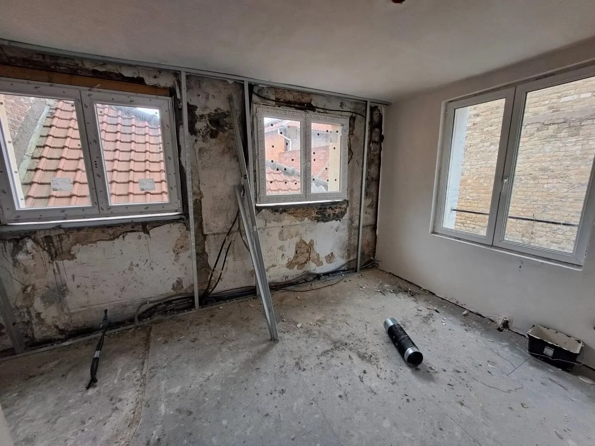

Avant / après · Chantier 01
Avant / après
Un aperçu de transformations à travers les photos de chantiers transmises pour cette maquette.
Avant / après
Faites défiler les photos pour découvrir les transformations. Les légendes et détails des chantiers restent à confirmer par l’entreprise.
